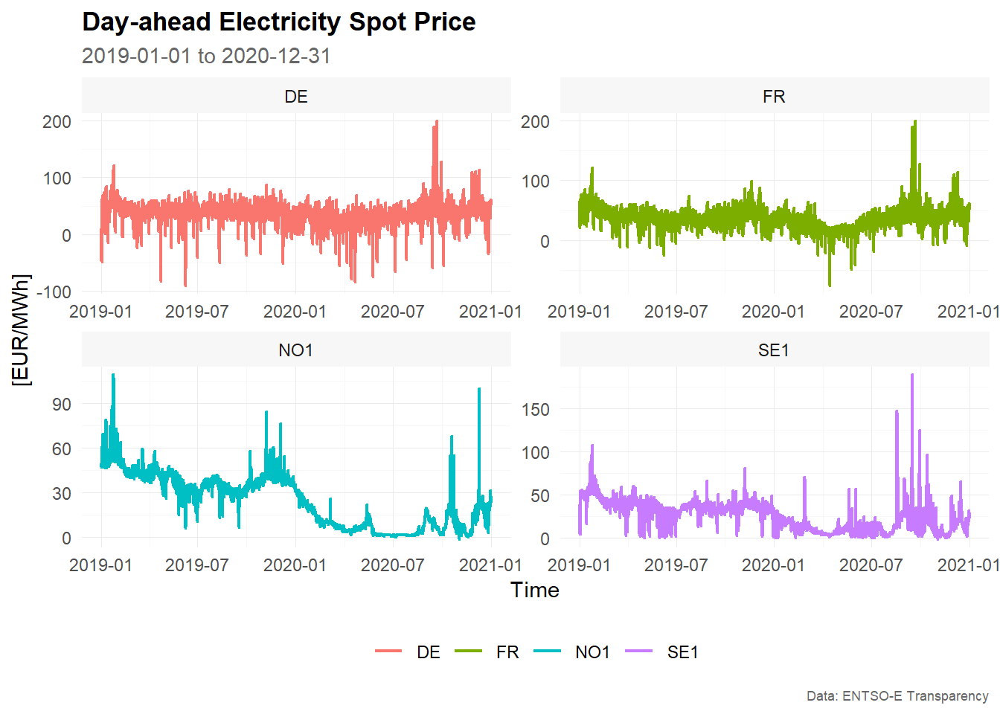
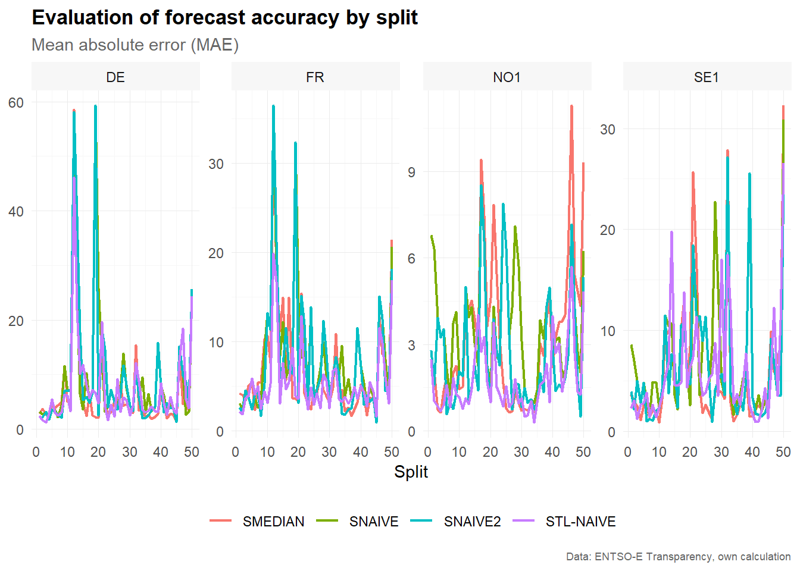

vignettes/vignette_02_cross_validation.Rmd
vignette_02_cross_validation.RmdThe package tscv provides a collection of functions and tools for time series analysis and forecasting as well as time series cross-validation. This is mainly a set of wrapper and helper functions as well as some extensions for the packages tsibble, fable and fabletools that I find useful for research in the area of time series forecasting.
Disclaimer: The tscv package is highly experimental and it is very likely that there will be (substantial) changes in the near future.
You can install the development version from GitHub with:
# install.packages("devtools")
devtools::install_github("ahaeusser/tscv")The data set elec_price is a hourly tsibble with day-ahead electricity spot prices in [EUR/MWh] from the ENTSO-E Transparency Platform. The data set contains time series data from 2019-01-01 to 2019-12-31 for 8 european bidding zones (BZN):
In this vignette, we will use only four time series to demonstrate the functionality of the package (the data set is filtered to the bidding zones Germany, France, Norway and Sweden). You can use the function check_data() to prepare the data set for further usage. The function checks whether the input data are a valid tsibble or not (regular spaced in time and ordered). Furthermore, implicit missing values are turned into explicit missing values (existing missing values are left untouched). If the data is provided in wide format, they are gathered into long format. You can use the function plot_line() to visualize the four time series.
# Prepare data set
data <- elec_price %>%
filter(BZN %in% c("DE", "FR", "NO1", "SE1")) %>%
check_data()
data
#> # A tsibble: 35,040 x 5 [1h] <UTC>
#> # Key: Series, Unit, BZN [4]
#> Time Series Unit BZN Value
#> <dttm> <chr> <chr> <chr> <dbl>
#> 1 2019-01-01 00:00:00 Day-ahead Prices [EUR/MWh] DE 10.1
#> 2 2019-01-01 01:00:00 Day-ahead Prices [EUR/MWh] DE -4.08
#> 3 2019-01-01 02:00:00 Day-ahead Prices [EUR/MWh] DE -9.91
#> 4 2019-01-01 03:00:00 Day-ahead Prices [EUR/MWh] DE -7.41
#> 5 2019-01-01 04:00:00 Day-ahead Prices [EUR/MWh] DE -12.6
#> 6 2019-01-01 05:00:00 Day-ahead Prices [EUR/MWh] DE -17.2
#> 7 2019-01-01 06:00:00 Day-ahead Prices [EUR/MWh] DE -15.1
#> 8 2019-01-01 07:00:00 Day-ahead Prices [EUR/MWh] DE -4.93
#> 9 2019-01-01 08:00:00 Day-ahead Prices [EUR/MWh] DE -6.33
#> 10 2019-01-01 09:00:00 Day-ahead Prices [EUR/MWh] DE -4.93
#> # ... with 35,030 more rows
data %>%
plot_line(
x = Time,
y = Value,
color = BZN,
facet_var = BZN,
title = "Day-ahead Electricity Spot Price",
subtitle = "2019-03-01 to 2019-03-15",
xlab = "Time",
ylab = "[EUR/MWh]",
caption = "Data: ENTSO-E Transparency")
To prepare the data set for time series cross-validation (TSCV), you can use the function split_data(). This function splits the data into training and testing (i.e. partitioning into time slices) for time series cross-validation. You can choose between stretch and slide. The first is an expanding window approach, while the latter is a fixed window approach. Furthermore, you can define the (initial) window size for training and testing via n_init and n_ahead, as well as the step size for increments via n_skip.
# Setup for time series cross validation
n_init <- 2400 # size for training window
n_ahead <- 24 # size for testing window (= forecast horizon)
mode <- "slide" # fixed window approach
n_skip <- 23 # skip 23 observations
n_lag <- 0 # no lag
data <- data %>%
split_data(
n_init = n_init,
n_ahead = n_ahead,
mode = mode,
n_skip = n_skip,
n_lag = n_lag)
train <- data$train
train
#> # A tsibble: 2,553,600 x 9 [1h] <UTC>
#> # Key: Series, Unit, BZN, split [1,064]
#> Time Series Unit BZN Value split id sample horizon
#> <dttm> <chr> <chr> <chr> <dbl> <int> <int> <chr> <int>
#> 1 2019-01-01 00:00:00 Day-ahead~ [EUR/~ DE 10.1 1 1 train NA
#> 2 2019-01-01 01:00:00 Day-ahead~ [EUR/~ DE -4.08 1 2 train NA
#> 3 2019-01-01 02:00:00 Day-ahead~ [EUR/~ DE -9.91 1 3 train NA
#> 4 2019-01-01 03:00:00 Day-ahead~ [EUR/~ DE -7.41 1 4 train NA
#> 5 2019-01-01 04:00:00 Day-ahead~ [EUR/~ DE -12.6 1 5 train NA
#> 6 2019-01-01 05:00:00 Day-ahead~ [EUR/~ DE -17.2 1 6 train NA
#> 7 2019-01-01 06:00:00 Day-ahead~ [EUR/~ DE -15.1 1 7 train NA
#> 8 2019-01-01 07:00:00 Day-ahead~ [EUR/~ DE -4.93 1 8 train NA
#> 9 2019-01-01 08:00:00 Day-ahead~ [EUR/~ DE -6.33 1 9 train NA
#> 10 2019-01-01 09:00:00 Day-ahead~ [EUR/~ DE -4.93 1 10 train NA
#> # ... with 2,553,590 more rows
test <- data$test
test
#> # A tsibble: 25,536 x 9 [1h] <UTC>
#> # Key: Series, Unit, BZN, split [1,064]
#> Time Series Unit BZN Value split id sample horizon
#> <dttm> <chr> <chr> <chr> <dbl> <int> <int> <chr> <int>
#> 1 2019-04-11 00:00:00 Day-ahead ~ [EUR/~ DE 37.1 1 2401 test 1
#> 2 2019-04-11 01:00:00 Day-ahead ~ [EUR/~ DE 36.5 1 2402 test 2
#> 3 2019-04-11 02:00:00 Day-ahead ~ [EUR/~ DE 37.1 1 2403 test 3
#> 4 2019-04-11 03:00:00 Day-ahead ~ [EUR/~ DE 38.9 1 2404 test 4
#> 5 2019-04-11 04:00:00 Day-ahead ~ [EUR/~ DE 47.9 1 2405 test 5
#> 6 2019-04-11 05:00:00 Day-ahead ~ [EUR/~ DE 56.4 1 2406 test 6
#> 7 2019-04-11 06:00:00 Day-ahead ~ [EUR/~ DE 59.2 1 2407 test 7
#> 8 2019-04-11 07:00:00 Day-ahead ~ [EUR/~ DE 51.7 1 2408 test 8
#> 9 2019-04-11 08:00:00 Day-ahead ~ [EUR/~ DE 48.6 1 2409 test 9
#> 10 2019-04-11 09:00:00 Day-ahead ~ [EUR/~ DE 46.0 1 2410 test 10
#> # ... with 25,526 more rowsThe data is split into training and test sets and we are ready for forecasting. Due to the sample size and computation time, only very simple benchmark methods are used:
SNAIVE: Seasonal naive model with weekly seasonality (from package fable)STL-NAIVE: STL-decomposition model and naive forecast. The series is decomposed via STL and the seasonal adjusted series is predicted via the naive approach. Afterwards, seasonal component is added to the forecasts (from packages fable and feasts)SNAIVE2: Variation of the seasonal naive approach. Mondays, Saturdays and Sundays are treated with a weekly lag. Tuesdays, Wednesdays, Thursdays and Fridays are treated with a daily lag.SMEDIAN: Seasonal median model.The functions SMEDIAN() and SNAIVE2() are extensions to the fable package.
# Model training
train <- train %>%
filter(split %in% c(1:100))
mdls <- train %>%
model(
"SNAIVE" = SNAIVE(Value ~ lag("week")),
"STL-NAIVE" = decomposition_model(STL(Value), NAIVE(season_adjust)),
"SNAIVE2" = SNAIVE2(Value),
"SMEDIAN" = SMEDIAN(Value ~ lag("week"))
)
mdls
#> # A mable: 400 x 8
#> # Key: Series, Unit, BZN, split [400]
#> Series Unit BZN split SNAIVE `STL-NAIVE` SNAIVE2
#> <chr> <chr> <chr> <int> <model> <model> <model>
#> 1 Day-ahead P~ [EUR/M~ DE 1 <SNAIVE> <STL decomposition model> <SNAIVE2>
#> 2 Day-ahead P~ [EUR/M~ DE 2 <SNAIVE> <STL decomposition model> <SNAIVE2>
#> 3 Day-ahead P~ [EUR/M~ DE 3 <SNAIVE> <STL decomposition model> <SNAIVE2>
#> 4 Day-ahead P~ [EUR/M~ DE 4 <SNAIVE> <STL decomposition model> <SNAIVE2>
#> 5 Day-ahead P~ [EUR/M~ DE 5 <SNAIVE> <STL decomposition model> <SNAIVE2>
#> 6 Day-ahead P~ [EUR/M~ DE 6 <SNAIVE> <STL decomposition model> <SNAIVE2>
#> 7 Day-ahead P~ [EUR/M~ DE 7 <SNAIVE> <STL decomposition model> <SNAIVE2>
#> 8 Day-ahead P~ [EUR/M~ DE 8 <SNAIVE> <STL decomposition model> <SNAIVE2>
#> 9 Day-ahead P~ [EUR/M~ DE 9 <SNAIVE> <STL decomposition model> <SNAIVE2>
#> 10 Day-ahead P~ [EUR/M~ DE 10 <SNAIVE> <STL decomposition model> <SNAIVE2>
#> # ... with 390 more rows, and 1 more variable: SMEDIAN <model>
# Forecasting
fcst <- mdls %>%
forecast(h = n_ahead)
fcst
#> # A fable: 38,400 x 8 [1h] <UTC>
#> # Key: Series, Unit, BZN, split, .model [1,600]
#> Series Unit BZN split .model Time Value .mean
#> <chr> <chr> <chr> <int> <chr> <dttm> <dist> <dbl>
#> 1 Day-ahead Pr~ [EUR/M~ DE 1 SNAIVE 2019-04-11 00:00:00 N(33, 367) 33
#> 2 Day-ahead Pr~ [EUR/M~ DE 1 SNAIVE 2019-04-11 01:00:00 N(33, 367) 32.6
#> 3 Day-ahead Pr~ [EUR/M~ DE 1 SNAIVE 2019-04-11 02:00:00 N(34, 367) 34.1
#> 4 Day-ahead Pr~ [EUR/M~ DE 1 SNAIVE 2019-04-11 03:00:00 N(37, 367) 36.9
#> 5 Day-ahead Pr~ [EUR/M~ DE 1 SNAIVE 2019-04-11 04:00:00 N(45, 367) 44.7
#> 6 Day-ahead Pr~ [EUR/M~ DE 1 SNAIVE 2019-04-11 05:00:00 N(54, 367) 53.6
#> 7 Day-ahead Pr~ [EUR/M~ DE 1 SNAIVE 2019-04-11 06:00:00 N(60, 367) 59.9
#> 8 Day-ahead Pr~ [EUR/M~ DE 1 SNAIVE 2019-04-11 07:00:00 N(47, 367) 46.9
#> 9 Day-ahead Pr~ [EUR/M~ DE 1 SNAIVE 2019-04-11 08:00:00 N(48, 367) 48
#> 10 Day-ahead Pr~ [EUR/M~ DE 1 SNAIVE 2019-04-11 09:00:00 N(47, 367) 47
#> # ... with 38,390 more rows
# Visualize forecasts
plot_forecast(
fcst = fcst,
data = bind_rows(train, test),
include = 48, # include the last two days of historical values
split = c(10, 11), # only split 10 and 11 are shown
title = "Day-ahead electricity spot price forecast",
subtitle = "Rolling forecasts for splits 10 and 11",
ylab = "[EUR/MWh]",
caption = "Data: ENTSO-E Transparency, own calculation"
)
To evaluate the forecast accuracy, the function error_metrics() is used. You can define whether to evaluate the accuracy by horizon or by split. Several accuracy metrics are available:
ME: mean errorMAE: mean absolute errorMSE: mean squared errorRMSE: root mean squared errorMAPE: mean absolute percentage errorsMAPE: scaled mean absolute percentage errorMPE: mean percentage errorMASE: mean absolute scale error
# Estimate error metrics
metrics_horizon <- error_metrics(
fcst = fcst,
test = test,
train = train,
period = 168,
by = "horizon")
metrics_horizon <- metrics_horizon %>%
filter(metric == "MAE")
metrics_horizon
#> # A tibble: 384 x 8
#> Series Unit BZN .model dimension n metric value
#> <chr> <chr> <chr> <chr> <chr> <int> <chr> <dbl>
#> 1 Day-ahead Prices [EUR/MWh] DE SMEDIAN horizon 1 MAE 5.42
#> 2 Day-ahead Prices [EUR/MWh] DE SMEDIAN horizon 2 MAE 5.57
#> 3 Day-ahead Prices [EUR/MWh] DE SMEDIAN horizon 3 MAE 5.70
#> 4 Day-ahead Prices [EUR/MWh] DE SMEDIAN horizon 4 MAE 5.77
#> 5 Day-ahead Prices [EUR/MWh] DE SMEDIAN horizon 5 MAE 7.23
#> 6 Day-ahead Prices [EUR/MWh] DE SMEDIAN horizon 6 MAE 7.51
#> 7 Day-ahead Prices [EUR/MWh] DE SMEDIAN horizon 7 MAE 7.45
#> 8 Day-ahead Prices [EUR/MWh] DE SMEDIAN horizon 8 MAE 7.54
#> 9 Day-ahead Prices [EUR/MWh] DE SMEDIAN horizon 9 MAE 8.12
#> 10 Day-ahead Prices [EUR/MWh] DE SMEDIAN horizon 10 MAE 8.76
#> # ... with 374 more rows
# Visualize results
metrics_horizon %>%
plot_error_metrics(
title = "Evaluation of forecast accuracy by forecast horizon",
subtitle = "Mean absolute error (MAE)",
xlab = "Forecast horizon (n-step-ahead)",
caption = "Data: ENTSO-E Transparency, own calculation"
)
# Estimate error metrics
metrics_split <- error_metrics(
fcst = fcst,
test = test,
train = train,
period = 168,
by = "split"
)
metrics_split <- metrics_split %>%
filter(metric == "MAE")
metrics_split
#> # A tibble: 1,600 x 8
#> Series Unit BZN .model dimension n metric value
#> <chr> <chr> <chr> <chr> <chr> <int> <chr> <dbl>
#> 1 Day-ahead Prices [EUR/MWh] DE SMEDIAN split 1 MAE 2.80
#> 2 Day-ahead Prices [EUR/MWh] DE SMEDIAN split 2 MAE 3.74
#> 3 Day-ahead Prices [EUR/MWh] DE SMEDIAN split 3 MAE 2.70
#> 4 Day-ahead Prices [EUR/MWh] DE SMEDIAN split 4 MAE 2.53
#> 5 Day-ahead Prices [EUR/MWh] DE SMEDIAN split 5 MAE 4.54
#> 6 Day-ahead Prices [EUR/MWh] DE SMEDIAN split 6 MAE 3.78
#> 7 Day-ahead Prices [EUR/MWh] DE SMEDIAN split 7 MAE 4.38
#> 8 Day-ahead Prices [EUR/MWh] DE SMEDIAN split 8 MAE 4.87
#> 9 Day-ahead Prices [EUR/MWh] DE SMEDIAN split 9 MAE 11.5
#> 10 Day-ahead Prices [EUR/MWh] DE SMEDIAN split 10 MAE 5.02
#> # ... with 1,590 more rows
# Visualize results
metrics_split %>%
plot_error_metrics(
title = "Evaluation of forecast accuracy by split",
subtitle = "Mean absolute error (MAE)",
xlab = "Split",
caption = "Data: ENTSO-E Transparency, own calculation"
)